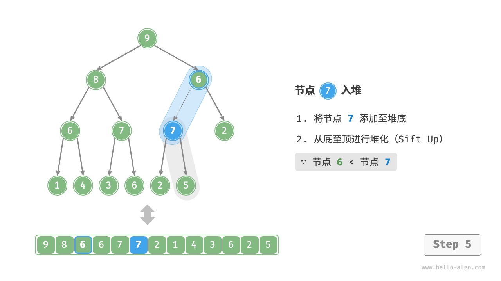
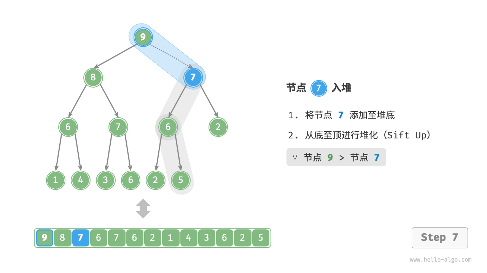

堆
「堆 heap」是一种满足特定条件的完全二叉树，主要可分为两种类型，如下图所示。
- 「小顶堆 min heap」：任意节点的值 $\leq$ 其子节点的值。
- 「大顶堆 max heap」：任意节点的值 $\geq$ 其子节点的值。

堆作为完全二叉树的一个特例，具有以下特性。
- 最底层节点靠左填充，其他层的节点都被填满。
- 我们将二叉树的根节点称为“堆顶”，将底层最靠右的节点称为“堆底”。
- 对于大顶堆（小顶堆），堆顶元素（根节点）的值是最大（最小）的。
堆的常用操作
需要指出的是，许多编程语言提供的是「优先队列 priority queue」，这是一种抽象的数据结构，定义为具有优先级排序的队列。
实际上，堆通常用于实现优先队列，大顶堆相当于元素按从大到小的顺序出队的优先队列。从使用角度来看，我们可以将“优先队列”和“堆”看作等价的数据结构。因此，本书对两者不做特别区分，统一称作“堆”。
堆的常用操作见下表，方法名需要根据编程语言来确定。
表
| 方法名 | 描述 | 时间复杂度 |
|---|---|---|
push() |
元素入堆 | $O(\log n)$ |
pop() |
堆顶元素出堆 | $O(\log n)$ |
peek() |
访问堆顶元素（对于大 / 小顶堆分别为最大 / 小值） | $O(1)$ |
size() |
获取堆的元素数量 | $O(1)$ |
isEmpty() |
判断堆是否为空 | $O(1)$ |
在实际应用中，我们可以直接使用编程语言提供的堆类（或优先队列类）。
类似于排序算法中的“从小到大排列”和“从大到小排列”，我们可以通过设置一个 flag 或修改 Comparator 实现“小顶堆”与“大顶堆”之间的转换。代码如下所示：
"Python"
```python title="heap.py" // 初始化小顶堆 min_heap, flag = [], 1 // 初始化大顶堆 max_heap, flag = [], -1
// Python 的 heapq 模块默认实现小顶堆 // 考虑将“元素取负”后再入堆，这样就可以将大小关系颠倒，从而实现大顶堆 // 在本示例中，flag = 1 时对应小顶堆，flag = -1 时对应大顶堆
// 元素入堆 heapq.heappush(max_heap, flag 1) heapq.heappush(max_heap, flag 3) heapq.heappush(max_heap, flag 2) heapq.heappush(max_heap, flag 5) heapq.heappush(max_heap, flag * 4)
// 获取堆顶元素 peek: int = flag * max_heap[0]// 5
// 堆顶元素出堆 // 出堆元素会形成一个从大到小的序列 val = flag heapq.heappop(max_heap)// 5 val = flag heapq.heappop(max_heap)// 4 val = flag heapq.heappop(max_heap)// 3 val = flag heapq.heappop(max_heap)// 2 val = flag * heapq.heappop(max_heap)// 1
// 获取堆大小 size: int = len(max_heap)
// 判断堆是否为空 is_empty: bool = not max_heap
// 输入列表并建堆 min_heap: list[int] = [1, 3, 2, 5, 4] heapq.heapify(min_heap) ```
"C++"
```cpp title="heap.cpp" / 初始化堆 / // 初始化小顶堆 priority_queue
> minHeap; // 初始化大顶堆 priority_queue > maxHeap; / 元素入堆 / maxHeap.push(1); maxHeap.push(3); maxHeap.push(2); maxHeap.push(5); maxHeap.push(4);
/ 获取堆顶元素 / int peek = maxHeap.top(); // 5
/ 堆顶元素出堆 / // 出堆元素会形成一个从大到小的序列 maxHeap.pop(); // 5 maxHeap.pop(); // 4 maxHeap.pop(); // 3 maxHeap.pop(); // 2 maxHeap.pop(); // 1
/ 获取堆大小 / int size = maxHeap.size();
/ 判断堆是否为空 / bool isEmpty = maxHeap.empty();
/ 输入列表并建堆 / vector
input{1, 3, 2, 5, 4}; priority_queue > minHeap(input.begin(), input.end()); ``` "Java"
```java title="heap.java" / 初始化堆 / // 初始化小顶堆 Queue
minHeap = new PriorityQueue<>(); // 初始化大顶堆（使用 lambda 表达式修改 Comparator 即可） Queue maxHeap = new PriorityQueue<>((a, b) -> b - a); / 元素入堆 / maxHeap.offer(1); maxHeap.offer(3); maxHeap.offer(2); maxHeap.offer(5); maxHeap.offer(4);
/ 获取堆顶元素 / int peek = maxHeap.peek(); // 5
/ 堆顶元素出堆 / // 出堆元素会形成一个从大到小的序列 peek = maxHeap.poll(); // 5 peek = maxHeap.poll(); // 4 peek = maxHeap.poll(); // 3 peek = maxHeap.poll(); // 2 peek = maxHeap.poll(); // 1
/ 获取堆大小 / int size = maxHeap.size();
/ 判断堆是否为空 / boolean isEmpty = maxHeap.isEmpty();
/ 输入列表并建堆 / minHeap = new PriorityQueue<>(Arrays.asList(1, 3, 2, 5, 4)); ```
"C#"
```csharp title="heap.cs" / 初始化堆 / // 初始化小顶堆 PriorityQueue
.Create((x, y) => y - x)); / 元素入堆 / maxHeap.Enqueue(1, 1); maxHeap.Enqueue(3, 3); maxHeap.Enqueue(2, 2); maxHeap.Enqueue(5, 5); maxHeap.Enqueue(4, 4);
/ 获取堆顶元素 / int peek = maxHeap.Peek();//5
/ 堆顶元素出堆 / // 出堆元素会形成一个从大到小的序列 peek = maxHeap.Dequeue(); // 5 peek = maxHeap.Dequeue(); // 4 peek = maxHeap.Dequeue(); // 3 peek = maxHeap.Dequeue(); // 2 peek = maxHeap.Dequeue(); // 1
/ 获取堆大小 / int size = maxHeap.Count;
/ 判断堆是否为空 / bool isEmpty = maxHeap.Count == 0;
/ 输入列表并建堆 / minHeap = new PriorityQueue
"Go"
```go title="heap.go" // Go 语言中可以通过实现 heap.Interface 来构建整数大顶堆 // 实现 heap.Interface 需要同时实现 sort.Interface type intHeap []any
// Push heap.Interface 的方法，实现推入元素到堆 func (h *intHeap) Push(x any) {
// Push 和 Pop 使用 pointer receiver 作为参数 // 因为它们不仅会对切片的内容进行调整，还会修改切片的长度。 *h = append(*h, x.(int))}
// Pop heap.Interface 的方法，实现弹出堆顶元素 func (h *intHeap) Pop() any {
// 待出堆元素存放在最后 last := (*h)[len(*h)-1] *h = (*h)[:len(*h)-1] return last}
// Len sort.Interface 的方法 func (h *intHeap) Len() int {
return len(*h)}
// Less sort.Interface 的方法 func (h *intHeap) Less(i, j int) bool {
// 如果实现小顶堆，则需要调整为小于号 return (*h)[i].(int) > (*h)[j].(int)}
// Swap sort.Interface 的方法 func (h *intHeap) Swap(i, j int) {
(*h)[i], (*h)[j] = (*h)[j], (*h)[i]}
// Top 获取堆顶元素 func (h *intHeap) Top() any {
return (*h)[0]}
/ Driver Code / func TestHeap(t *testing.T) {
/* 初始化堆 */ // 初始化大顶堆 maxHeap := &intHeap{} heap.Init(maxHeap) /* 元素入堆 */ // 调用 heap.Interface 的方法，来添加元素 heap.Push(maxHeap, 1) heap.Push(maxHeap, 3) heap.Push(maxHeap, 2) heap.Push(maxHeap, 4) heap.Push(maxHeap, 5) /* 获取堆顶元素 */ top := maxHeap.Top() fmt.Printf("堆顶元素为 %d\n", top) /* 堆顶元素出堆 */ // 调用 heap.Interface 的方法，来移除元素 heap.Pop(maxHeap) // 5 heap.Pop(maxHeap) // 4 heap.Pop(maxHeap) // 3 heap.Pop(maxHeap) // 2 heap.Pop(maxHeap) // 1 /* 获取堆大小 */ size := len(*maxHeap) fmt.Printf("堆元素数量为 %d\n", size) /* 判断堆是否为空 */ isEmpty := len(*maxHeap) == 0 fmt.Printf("堆是否为空 %t\n", isEmpty)} ```
"Swift"
swift title="heap.swift" // Swift 未提供内置 Heap 类"JS"
javascript title="heap.js" // JavaScript 未提供内置 Heap 类"TS"
typescript title="heap.ts" // TypeScript 未提供内置 Heap 类"Dart"
dart title="heap.dart" // Dart 未提供内置 Heap 类"Rust"
```rust title="heap.rs" use std::collections::BinaryHeap; use std::cmp::Reverse;
/ 初始化堆 / // 初始化小顶堆 let mut min_heap = BinaryHeap::
/ 元素入堆 / max_heap.push(1); max_heap.push(3); max_heap.push(2); max_heap.push(5); max_heap.push(4);
/ 获取堆顶元素 / let peek = max_heap.peek().unwrap(); // 5
/ 堆顶元素出堆 / // 出堆元素会形成一个从大到小的序列 let peek = max_heap.pop().unwrap(); // 5 let peek = max_heap.pop().unwrap(); // 4 let peek = max_heap.pop().unwrap(); // 3 let peek = max_heap.pop().unwrap(); // 2 let peek = max_heap.pop().unwrap(); // 1
/ 获取堆大小 / let size = max_heap.len();
/ 判断堆是否为空 / let is_empty = max_heap.is_empty();
/ 输入列表并建堆 / let min_heap = BinaryHeap::from(vec![Reverse(1), Reverse(3), Reverse(2), Reverse(5), Reverse(4)]); ```
"C"
c title="heap.c" // C 未提供内置 Heap 类"Zig"
```zig title="heap.zig"
```
堆的实现
下文实现的是大顶堆。若要将其转换为小顶堆，只需将所有大小逻辑判断取逆（例如，将 $\geq$ 替换为 $\leq$ ）。感兴趣的读者可以自行实现。
堆的存储与表示
“二叉树”章节讲过，完全二叉树非常适合用数组来表示。由于堆正是一种完全二叉树，因此我们将采用数组来存储堆。
当使用数组表示二叉树时，元素代表节点值，索引代表节点在二叉树中的位置。节点指针通过索引映射公式来实现。
如下图所示，给定索引 $i$ ，其左子节点的索引为 $2i + 1$ ，右子节点的索引为 $2i + 2$ ，父节点的索引为 $(i - 1) / 2$（向下整除）。当索引越界时，表示空节点或节点不存在。

我们可以将索引映射公式封装成函数，方便后续使用：
- "Python" ```python def left(self, i: int) -> int: """获取左子节点的索引""" return 2 * i + 1
def right(self, i: int) -> int: """获取右子节点的索引""" return 2 * i + 2
def parent(self, i: int) -> int: """获取父节点的索引""" return (i - 1) // 2 // 向下整除
- "C++"
```cpp
/* 获取左子节点的索引 */
int left(int i) {
return 2 * i + 1;
}
/* 获取右子节点的索引 */
int right(int i) {
return 2 * i + 2;
}
/* 获取父节点的索引 */
int parent(int i) {
return (i - 1) / 2; // 向下整除
}
- "Java" ```java / 获取左子节点的索引 / int left(int i) { return 2 * i + 1; }
/ 获取右子节点的索引 / int right(int i) { return 2 * i + 2; }
/ 获取父节点的索引 / int parent(int i) { return (i - 1) / 2; // 向下整除 }
### 访问堆顶元素
堆顶元素即为二叉树的根节点，也就是列表的首个元素：
- "Python"
```python
def peek(self) -> int:
"""访问堆顶元素"""
return self.max_heap[0]
"C++"
/* 访问堆顶元素 */ int peek() { return maxHeap[0]; }"Java"
/* 访问堆顶元素 */ int peek() { return maxHeap.get(0); }
元素入堆
给定元素 val ，我们首先将其添加到堆底。添加之后，由于 val 可能大于堆中其他元素，堆的成立条件可能已被破坏，因此需要修复从插入节点到根节点的路径上的各个节点，这个操作被称为「堆化 heapify」。
考虑从入堆节点开始，从底至顶执行堆化。如下图所示，我们比较插入节点与其父节点的值，如果插入节点更大，则将它们交换。然后继续执行此操作，从底至顶修复堆中的各个节点，直至越过根节点或遇到无须交换的节点时结束。
"<1>"

"<2>"

"<3>"

"<4>"
"<5>" 
"<6>"

"<7>" 
"<8>"

"<9>"
设节点总数为 $n$ ，则树的高度为 $O(\log n)$ 。由此可知，堆化操作的循环轮数最多为 $O(\log n)$ ，元素入堆操作的时间复杂度为 $O(\log n)$ 。代码如下所示：
- "Python" ```python def push(self, val: int): """元素入堆""" // 添加节点 self.max_heap.append(val) // 从底至顶堆化 self.sift_up(self.size() - 1)
def sift_up(self, i: int): """从节点 i 开始，从底至顶堆化""" while True: // 获取节点 i 的父节点 p = self.parent(i) // 当“越过根节点”或“节点无须修复”时，结束堆化 if p < 0 or self.max_heap[i] <= self.max_heap[p]: break // 交换两节点 self.swap(i, p) // 循环向上堆化 i = p
- "C++"
```cpp
/* 元素入堆 */
void push(int val) {
// 添加节点
maxHeap.push_back(val);
// 从底至顶堆化
siftUp(size() - 1);
}
/* 从节点 i 开始，从底至顶堆化 */
void siftUp(int i) {
while (true) {
// 获取节点 i 的父节点
int p = parent(i);
// 当“越过根节点”或“节点无须修复”时，结束堆化
if (p < 0 || maxHeap[i] <= maxHeap[p])
break;
// 交换两节点
swap(maxHeap[i], maxHeap[p]);
// 循环向上堆化
i = p;
}
}
- "Java" ```java / 元素入堆 / void push(int val) { // 添加节点 maxHeap.add(val); // 从底至顶堆化 siftUp(size() - 1); }
/ 从节点 i 开始，从底至顶堆化 / void siftUp(int i) { while (true) { // 获取节点 i 的父节点 int p = parent(i); // 当“越过根节点”或“节点无须修复”时，结束堆化 if (p < 0 || maxHeap.get(i) <= maxHeap.get(p)) break; // 交换两节点 swap(i, p); // 循环向上堆化 i = p; } }
### 堆顶元素出堆
堆顶元素是二叉树的根节点，即列表首元素。如果我们直接从列表中删除首元素，那么二叉树中所有节点的索引都会发生变化，这将使得后续使用堆化进行修复变得困难。为了尽量减少元素索引的变动，我们采用以下操作步骤。
1. 交换堆顶元素与堆底元素（交换根节点与最右叶节点）。
2. 交换完成后，将堆底从列表中删除（注意，由于已经交换，因此实际上删除的是原来的堆顶元素）。
3. 从根节点开始，**从顶至底执行堆化**。
如下图所示，**“从顶至底堆化”的操作方向与“从底至顶堆化”相反**，我们将根节点的值与其两个子节点的值进行比较，将最大的子节点与根节点交换。然后循环执行此操作，直到越过叶节点或遇到无须交换的节点时结束。
- "<1>"

- "<2>"

- "<3>"

- "<4>"

- "<5>"

- "<6>"

- "<7>"

- "<8>"

- "<9>"

- "<10>"

与元素入堆操作相似，堆顶元素出堆操作的时间复杂度也为 $O(\log n)$ 。代码如下所示：
- "Python"
```python
def pop(self) -> int:
"""元素出堆"""
// 判空处理
if self.is_empty():
raise IndexError("堆为空")
// 交换根节点与最右叶节点（交换首元素与尾元素）
self.swap(0, self.size() - 1)
// 删除节点
val = self.max_heap.pop()
// 从顶至底堆化
self.sift_down(0)
// 返回堆顶元素
return val
def sift_down(self, i: int):
"""从节点 i 开始，从顶至底堆化"""
while True:
// 判断节点 i, l, r 中值最大的节点，记为 ma
l, r, ma = self.left(i), self.right(i), i
if l < self.size() and self.max_heap[l] > self.max_heap[ma]:
ma = l
if r < self.size() and self.max_heap[r] > self.max_heap[ma]:
ma = r
// 若节点 i 最大或索引 l, r 越界，则无须继续堆化，跳出
if ma == i:
break
// 交换两节点
self.swap(i, ma)
// 循环向下堆化
i = ma
- "C++"
```cpp
/ 元素出堆 /
void pop() {
// 判空处理
if (isEmpty()) {
} // 交换根节点与最右叶节点（交换首元素与尾元素） swap(maxHeap[0], maxHeap[size() - 1]); // 删除节点 maxHeap.pop_back(); // 从顶至底堆化 siftDown(0); }throw out_of_range("堆为空");
/ 从节点 i 开始，从顶至底堆化 / void siftDown(int i) { while (true) { // 判断节点 i, l, r 中值最大的节点，记为 ma int l = left(i), r = right(i), ma = i; if (l < size() && maxHeap[l] > maxHeap[ma]) ma = l; if (r < size() && maxHeap[r] > maxHeap[ma]) ma = r; // 若节点 i 最大或索引 l, r 越界，则无须继续堆化，跳出 if (ma == i) break; swap(maxHeap[i], maxHeap[ma]); // 循环向下堆化 i = ma; } }
- "Java"
```java
/* 元素出堆 */
int pop() {
// 判空处理
if (isEmpty())
throw new IndexOutOfBoundsException();
// 交换根节点与最右叶节点（交换首元素与尾元素）
swap(0, size() - 1);
// 删除节点
int val = maxHeap.remove(size() - 1);
// 从顶至底堆化
siftDown(0);
// 返回堆顶元素
return val;
}
/* 从节点 i 开始，从顶至底堆化 */
void siftDown(int i) {
while (true) {
// 判断节点 i, l, r 中值最大的节点，记为 ma
int l = left(i), r = right(i), ma = i;
if (l < size() && maxHeap.get(l) > maxHeap.get(ma))
ma = l;
if (r < size() && maxHeap.get(r) > maxHeap.get(ma))
ma = r;
// 若节点 i 最大或索引 l, r 越界，则无须继续堆化，跳出
if (ma == i)
break;
// 交换两节点
swap(i, ma);
// 循环向下堆化
i = ma;
}
}
堆的常见应用
- 优先队列：堆通常作为实现优先队列的首选数据结构，其入队和出队操作的时间复杂度均为 $O(\log n)$ ，而建队操作为 $O(n)$ ，这些操作都非常高效。
- 堆排序：给定一组数据，我们可以用它们建立一个堆，然后不断地执行元素出堆操作，从而得到有序数据。然而，我们通常会使用一种更优雅的方式实现堆排序，详见“堆排序”章节。
- 获取最大的 $k$ 个元素：这是一个经典的算法问题，同时也是一种典型应用，例如选择热度前 10 的新闻作为微博热搜，选取销量前 10 的商品等。